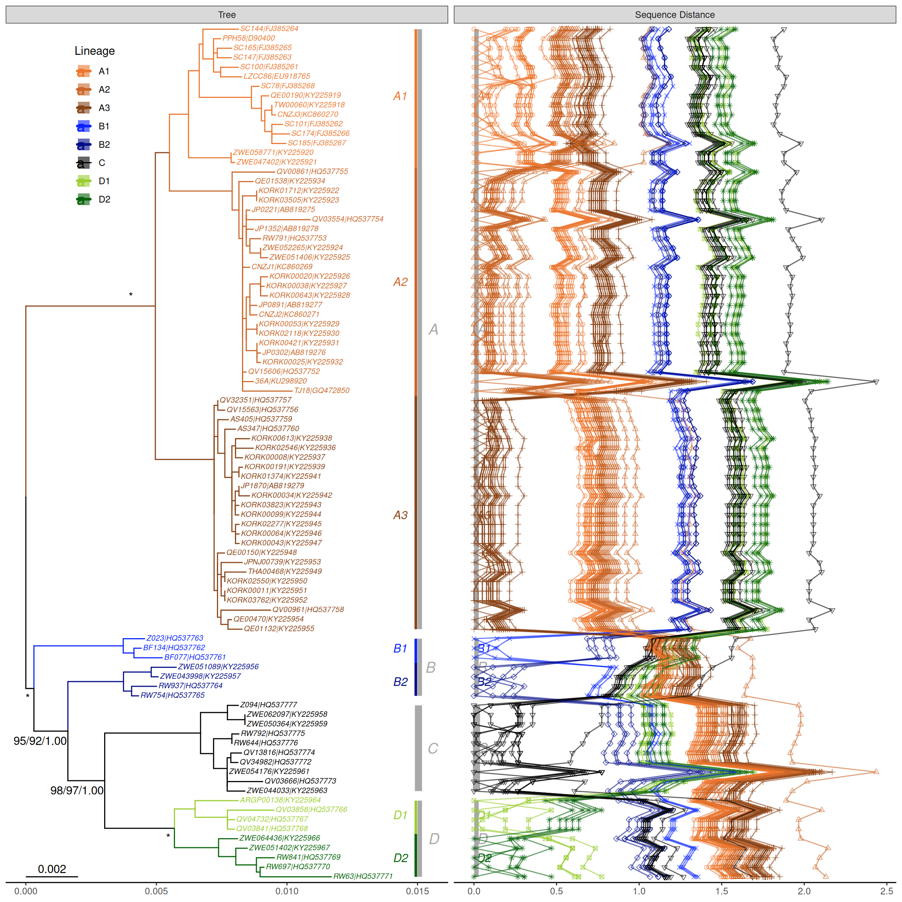
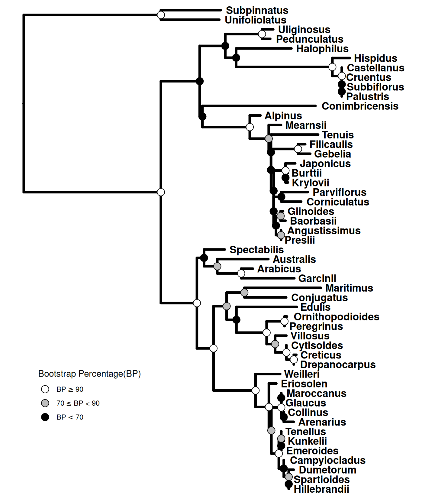
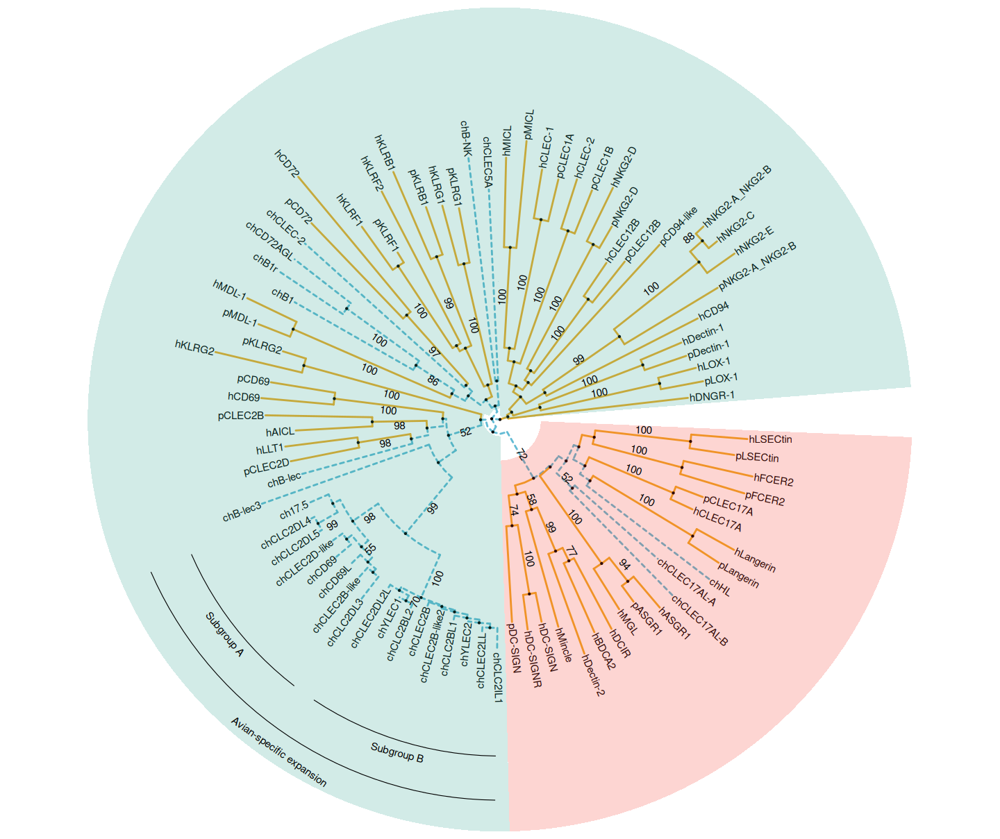
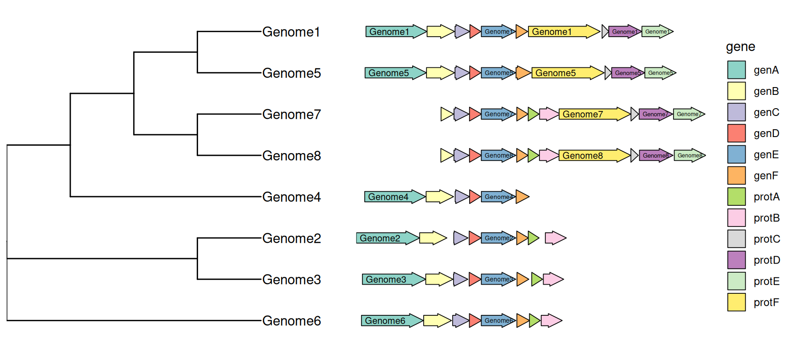

library("yulab.utils")10 Gallery of Reproducible Examples
10.1 Visualizing pairwise nucleotide sequence distance with a phylogenetic tree
This example reproduces figure 1 of (Chen et al., 2017). It extracts accession numbers from tip labels of the HPV58 tree and calculates pairwise nucleotide sequence distances. The distance matrix is visualized as dot and line plots. This example demonstrates the ability to add multiple layers to a specific panel. As illustrated in Figure ?fig-jv2017, the geom_facet() function displays sequence distances as a dot plot and then adds a layer of line plot to the same panel, i.e., sequence distance. In addition, the tree in geom_facet() can be fully annotated with multiple layers (clade labels, bootstrap support values, etc.). The source code is modified from the supplemental file of (Yu et al., 2018).
library(TDbook)
library(tibble)
library(tidyr)
library(Biostrings)Loading required package: BiocGenerics
Attaching package: 'BiocGenerics'The following objects are masked from 'package:stats':
IQR, mad, sd, var, xtabsThe following objects are masked from 'package:base':
anyDuplicated, aperm, append, as.data.frame, basename, cbind,
colnames, dirname, do.call, duplicated, eval, evalq, Filter, Find,
get, grep, grepl, intersect, is.unsorted, lapply, Map, mapply,
match, mget, order, paste, pmax, pmax.int, pmin, pmin.int,
Position, rank, rbind, Reduce, rownames, sapply, saveRDS, setdiff,
table, tapply, union, unique, unsplit, which.max, which.minLoading required package: S4VectorsLoading required package: stats4
Attaching package: 'S4Vectors'The following object is masked from 'package:tidyr':
expandThe following object is masked from 'package:utils':
findMatchesThe following objects are masked from 'package:base':
expand.grid, I, unnameLoading required package: IRangesLoading required package: XVectorLoading required package: GenomeInfoDb
Attaching package: 'Biostrings'The following object is masked from 'package:base':
strsplitlibrary(treeio)treeio v1.35.0 Learn more at https://yulab-smu.top/contribution-tree-data/
Please cite:
LG Wang, TTY Lam, S Xu, Z Dai, L Zhou, T Feng, P Guo, CW Dunn, BR
Jones, T Bradley, H Zhu, Y Guan, Y Jiang, G Yu. treeio: an R package
for phylogenetic tree input and output with richly annotated and
associated data. Molecular Biology and Evolution. 2020, 37(2):599-603.
doi: 10.1093/molbev/msz240
Attaching package: 'treeio'The following object is masked from 'package:Biostrings':
masklibrary(ggplot2)
library(ggtree)ggtree v4.1.1.003 Learn more at https://yulab-smu.top/contribution-tree-data/
Please cite:
S Xu, Z Dai, P Guo, X Fu, S Liu, L Zhou, W Tang, T Feng, M Chen, L
Zhan, T Wu, E Hu, Y Jiang, X Bo, G Yu. ggtreeExtra: Compact
visualization of richly annotated phylogenetic data. Molecular Biology
and Evolution. 2021, 38(9):4039-4042. doi: 10.1093/molbev/msab166
Attaching package: 'ggtree'The following object is masked from 'package:Biostrings':
collapseThe following object is masked from 'package:IRanges':
collapseThe following object is masked from 'package:S4Vectors':
expandThe following object is masked from 'package:tidyr':
expand# loaded from TDbook package
tree <- tree_HPV58
clade <- c(A3 = 92, A1 = 94, A2 = 108, B1 = 156,
B2 = 159, C = 163, D1 = 173, D2 = 176)
tree <- groupClade(tree, clade)
cols <- c(A1 = "#EC762F", A2 = "#CA6629", A3 = "#894418", B1 = "#0923FA",
B2 = "#020D87", C = "#000000", D1 = "#9ACD32",D2 = "#08630A")
## visualize the tree with tip labels and tree scale
p <- ggtree(tree, aes(color = group), ladderize = FALSE) %>%
rotate(rootnode(tree)) +
geom_tiplab(aes(label = paste0("italic('", label, "')")),
parse = TRUE, size = 2.5) +
geom_treescale(x = 0, y = 1, width = 0.002) +
scale_color_manual(values = c(cols, "black"),
na.value = "black", name = "Lineage",
breaks = c("A1", "A2", "A3", "B1", "B2", "C", "D1", "D2")) +
guides(color = guide_legend(override.aes = list(size = 5, shape = 15))) +
theme_tree2(legend.position = c(.1, .88))Warning: Using `size` aesthetic for lines was deprecated in ggplot2 3.4.0.
ℹ Please use `linewidth` instead.
ℹ The deprecated feature was likely used in the ggtree package.
Please report the issue at <https://github.com/YuLab-SMU/ggtree/issues>.## Optional
## add labels for monophyletic (A, C and D) and paraphyletic (B) groups
dat <- tibble(node = c(94, 108, 131, 92, 156, 159, 163, 173, 176,172),
name = c("A1", "A2", "A3", "A", "B1",
"B2", "C", "D1", "D2", "D"),
offset = c(0.003, 0.003, 0.003, 0.00315, 0.003,
0.003, 0.0031, 0.003, 0.003, 0.00315),
offset.text = c(-.001, -.001, -.001, 0.0002, -.001,
-.001, 0.0002, -.001, -.001, 0.0002),
barsize = c(1.2, 1.2, 1.2, 2, 1.2, 1.2, 3.2, 1.2, 1.2, 2),
extend = list(c(0, 0.5), 0.5, c(0.5, 0), 0, c(0, 0.5),
c(0.5, 0), 0, c(0, 0.5), c(0.5, 0), 0)
) %>%
dplyr::group_split(barsize)
p <- p +
geom_cladelab(
data = dat[[1]],
mapping = aes(
node = node,
label = name,
color = group,
offset = offset,
offset.text = offset.text,
extend = extend
),
barsize = 1.2,
fontface = 3,
align = TRUE
) +
geom_cladelab(
data = dat[[2]],
mapping = aes(
node = node,
label = name,
offset = offset,
offset.text =offset.text,
extend = extend
),
barcolor = "darkgrey",
textcolor = "darkgrey",
barsize = 2,
fontsize = 5,
fontface = 3,
align = TRUE
) +
geom_cladelab(
data = dat[[3]],
mapping = aes(
node = node,
label = name,
offset = offset,
offset.text = offset.text,
extend = extend
),
barcolor = "darkgrey",
textcolor = "darkgrey",
barsize = 3.2,
fontsize = 5,
fontface = 3,
align = TRUE
) +
geom_strip(65, 71, "italic(B)", color = "darkgrey",
offset = 0.00315, align = TRUE, offset.text = 0.0002,
barsize = 2, fontsize = 5, parse = TRUE)
## Optional
## display support values
p <- p + geom_nodelab(aes(subset = (node == 92), label = "*"),
color = "black", nudge_x = -.001, nudge_y = 1) +
geom_nodelab(aes(subset = (node == 155), label = "*"),
color = "black", nudge_x = -.0003, nudge_y = -1) +
geom_nodelab(aes(subset = (node == 158), label = "95/92/1.00"),
color = "black", nudge_x = -0.0001,
nudge_y = -1, hjust = 1) +
geom_nodelab(aes(subset = (node == 162), label = "98/97/1.00"),
color = "black", nudge_x = -0.0001,
nudge_y = -1, hjust = 1) +
geom_nodelab(aes(subset = (node == 172), label = "*"),
color = "black", nudge_x = -.0003, nudge_y = -1) ## extract accession numbers from tip labels
tl <- tree$tip.label
acc <- sub("\\w+\\|", "", tl)
names(tl) <- acc
## read sequences from GenBank directly into R
## and convert the object to DNAStringSet
tipseq <- ape::read.GenBank(acc) %>% as.character %>%
lapply(., paste0, collapse = "") %>% unlist %>%
DNAStringSet
## align the sequences using muscle
tipseq_aln <- muscle::muscle(tipseq)
MUSCLE v3.8.31 by Robert C. Edgar
http://www.drive5.com/muscle
This software is donated to the public domain.
Please cite: Edgar, R.C. Nucleic Acids Res 32(5), 1792-97.
file1193d10bd1df0 90 seqs, max length 7863, avg length 7826
1322 MB(8%)00:00:00 Iter 1 0.02% K-mer dist pass 1
1322 MB(8%)00:00:00 Iter 1 12.23% K-mer dist pass 1
1322 MB(8%)00:00:00 Iter 1 24.44% K-mer dist pass 1
1322 MB(8%)00:00:00 Iter 1 36.65% K-mer dist pass 1
1322 MB(8%)00:00:00 Iter 1 48.86% K-mer dist pass 1
1322 MB(8%)00:00:00 Iter 1 61.07% K-mer dist pass 1
1322 MB(8%)00:00:00 Iter 1 73.28% K-mer dist pass 1
1322 MB(8%)00:00:00 Iter 1 85.49% K-mer dist pass 1
1322 MB(8%)00:00:00 Iter 1 97.70% K-mer dist pass 1
1322 MB(8%)00:00:00 Iter 1 100.00% K-mer dist pass 1
1322 MB(8%)00:00:00 Iter 1 0.02% K-mer dist pass 2
1322 MB(8%)00:00:00 Iter 1 12.23% K-mer dist pass 2
1322 MB(8%)00:00:00 Iter 1 24.44% K-mer dist pass 2
1322 MB(8%)00:00:00 Iter 1 36.65% K-mer dist pass 2
1322 MB(8%)00:00:00 Iter 1 48.86% K-mer dist pass 2
1322 MB(8%)00:00:00 Iter 1 61.07% K-mer dist pass 2
1322 MB(8%)00:00:00 Iter 1 73.28% K-mer dist pass 2
1322 MB(8%)00:00:00 Iter 1 85.49% K-mer dist pass 2
1322 MB(8%)00:00:00 Iter 1 97.70% K-mer dist pass 2
1322 MB(8%)00:00:00 Iter 1 100.00% K-mer dist pass 2
1331 MB(8%)00:00:00 Iter 1 1.12% Align node
1404 MB(9%)00:00:01 Iter 1 2.25% Align node
1415 MB(9%)00:00:02 Iter 1 3.37% Align node
1418 MB(9%)00:00:02 Iter 1 4.49% Align node
1425 MB(9%)00:00:03 Iter 1 5.62% Align node
1431 MB(9%)00:00:04 Iter 1 6.74% Align node
1438 MB(9%)00:00:05 Iter 1 7.87% Align node
1445 MB(9%)00:00:05 Iter 1 8.99% Align node
1457 MB(9%)00:00:06 Iter 1 10.11% Align node
1463 MB(9%)00:00:07 Iter 1 11.24% Align node
1466 MB(9%)00:00:07 Iter 1 12.36% Align node
1468 MB(9%)00:00:08 Iter 1 13.48% Align node
1470 MB(9%)00:00:09 Iter 1 14.61% Align node
1473 MB(9%)00:00:10 Iter 1 15.73% Align node
1475 MB(9%)00:00:10 Iter 1 16.85% Align node
1477 MB(9%)00:00:11 Iter 1 17.98% Align node
1480 MB(9%)00:00:12 Iter 1 19.10% Align node
1482 MB(9%)00:00:12 Iter 1 20.22% Align node
1485 MB(9%)00:00:13 Iter 1 21.35% Align node
1487 MB(9%)00:00:14 Iter 1 22.47% Align node
1489 MB(9%)00:00:15 Iter 1 23.60% Align node
1492 MB(9%)00:00:15 Iter 1 24.72% Align node
1494 MB(9%)00:00:16 Iter 1 25.84% Align node
1505 MB(9%)00:00:17 Iter 1 26.97% Align node
1519 MB(9%)00:00:18 Iter 1 28.09% Align node
1521 MB(9%)00:00:18 Iter 1 29.21% Align node
1530 MB(9%)00:00:19 Iter 1 30.34% Align node
1533 MB(9%)00:00:20 Iter 1 31.46% Align node
1535 MB(9%)00:00:20 Iter 1 32.58% Align node
1537 MB(9%)00:00:21 Iter 1 33.71% Align node
1540 MB(9%)00:00:22 Iter 1 34.83% Align node
1542 MB(9%)00:00:23 Iter 1 35.96% Align node
1545 MB(9%)00:00:23 Iter 1 37.08% Align node
1560 MB(10%)00:00:24 Iter 1 38.20% Align node
1565 MB(10%)00:00:25 Iter 1 39.33% Align node
1572 MB(10%)00:00:25 Iter 1 40.45% Align node
1581 MB(10%)00:00:26 Iter 1 41.57% Align node
1586 MB(10%)00:00:27 Iter 1 42.70% Align node
1588 MB(10%)00:00:28 Iter 1 43.82% Align node
1590 MB(10%)00:00:28 Iter 1 44.94% Align node
1593 MB(10%)00:00:29 Iter 1 46.07% Align node
1595 MB(10%)00:00:30 Iter 1 47.19% Align node
1597 MB(10%)00:00:31 Iter 1 48.31% Align node
1600 MB(10%)00:00:31 Iter 1 49.44% Align node
1602 MB(10%)00:00:32 Iter 1 50.56% Align node
1604 MB(10%)00:00:33 Iter 1 51.69% Align node
1607 MB(10%)00:00:33 Iter 1 52.81% Align node
1614 MB(10%)00:00:34 Iter 1 53.93% Align node
1632 MB(10%)00:00:35 Iter 1 55.06% Align node
1634 MB(10%)00:00:36 Iter 1 56.18% Align node
1636 MB(10%)00:00:36 Iter 1 57.30% Align node
1639 MB(10%)00:00:37 Iter 1 58.43% Align node
1641 MB(10%)00:00:38 Iter 1 59.55% Align node
1644 MB(10%)00:00:39 Iter 1 60.67% Align node
1659 MB(10%)00:00:39 Iter 1 61.80% Align node
1662 MB(10%)00:00:40 Iter 1 62.92% Align node
1664 MB(10%)00:00:41 Iter 1 64.04% Align node
1666 MB(10%)00:00:41 Iter 1 65.17% Align node
1669 MB(10%)00:00:42 Iter 1 66.29% Align node
1671 MB(10%)00:00:43 Iter 1 67.42% Align node
1674 MB(10%)00:00:44 Iter 1 68.54% Align node
1676 MB(10%)00:00:44 Iter 1 69.66% Align node
1678 MB(10%)00:00:45 Iter 1 70.79% Align node
1692 MB(10%)00:00:46 Iter 1 71.91% Align node
1694 MB(10%)00:00:47 Iter 1 73.03% Align node
1697 MB(10%)00:00:47 Iter 1 74.16% Align node
1699 MB(10%)00:00:48 Iter 1 75.28% Align node
1710 MB(10%)00:00:49 Iter 1 76.40% Align node
1713 MB(10%)00:00:49 Iter 1 77.53% Align node
1715 MB(10%)00:00:50 Iter 1 78.65% Align node
1717 MB(10%)00:00:51 Iter 1 79.78% Align node
1726 MB(11%)00:00:52 Iter 1 80.90% Align node
1729 MB(11%)00:00:52 Iter 1 82.02% Align node
1738 MB(11%)00:00:53 Iter 1 83.15% Align node
1749 MB(11%)00:00:54 Iter 1 84.27% Align node
1752 MB(11%)00:00:54 Iter 1 85.39% Align node
1754 MB(11%)00:00:55 Iter 1 86.52% Align node
1756 MB(11%)00:00:56 Iter 1 87.64% Align node
1759 MB(11%)00:00:57 Iter 1 88.76% Align node
1761 MB(11%)00:00:57 Iter 1 89.89% Align node
1770 MB(11%)00:00:58 Iter 1 91.01% Align node
1772 MB(11%)00:00:59 Iter 1 92.13% Align node
1779 MB(11%)00:01:00 Iter 1 93.26% Align node
1786 MB(11%)00:01:00 Iter 1 94.38% Align node
1789 MB(11%)00:01:01 Iter 1 95.51% Align node
1791 MB(11%)00:01:02 Iter 1 96.63% Align node
1793 MB(11%)00:01:02 Iter 1 97.75% Align node
1796 MB(11%)00:01:03 Iter 1 98.88% Align node
1798 MB(11%)00:01:04 Iter 1 100.00% Align node
1800 MB(11%)00:01:05 Iter 1 100.00% Align node
1800 MB(11%)00:01:05 Iter 1 1.11% Root alignment
1801 MB(11%)00:01:05 Iter 1 2.22% Root alignment
1801 MB(11%)00:01:05 Iter 1 3.33% Root alignment
1801 MB(11%)00:01:05 Iter 1 4.44% Root alignment
1801 MB(11%)00:01:05 Iter 1 5.56% Root alignment
1801 MB(11%)00:01:05 Iter 1 6.67% Root alignment
1801 MB(11%)00:01:05 Iter 1 7.78% Root alignment
1801 MB(11%)00:01:05 Iter 1 8.89% Root alignment
1801 MB(11%)00:01:05 Iter 1 10.00% Root alignment
1801 MB(11%)00:01:05 Iter 1 11.11% Root alignment
1801 MB(11%)00:01:05 Iter 1 12.22% Root alignment
1801 MB(11%)00:01:05 Iter 1 13.33% Root alignment
1801 MB(11%)00:01:05 Iter 1 14.44% Root alignment
1801 MB(11%)00:01:05 Iter 1 15.56% Root alignment
1801 MB(11%)00:01:05 Iter 1 16.67% Root alignment
1801 MB(11%)00:01:05 Iter 1 17.78% Root alignment
1801 MB(11%)00:01:05 Iter 1 18.89% Root alignment
1801 MB(11%)00:01:05 Iter 1 20.00% Root alignment
1801 MB(11%)00:01:05 Iter 1 21.11% Root alignment
1801 MB(11%)00:01:05 Iter 1 22.22% Root alignment
1801 MB(11%)00:01:05 Iter 1 23.33% Root alignment
1801 MB(11%)00:01:05 Iter 1 24.44% Root alignment
1801 MB(11%)00:01:05 Iter 1 25.56% Root alignment
1801 MB(11%)00:01:05 Iter 1 26.67% Root alignment
1801 MB(11%)00:01:05 Iter 1 27.78% Root alignment
1801 MB(11%)00:01:05 Iter 1 28.89% Root alignment
1801 MB(11%)00:01:05 Iter 1 30.00% Root alignment
1801 MB(11%)00:01:05 Iter 1 31.11% Root alignment
1801 MB(11%)00:01:05 Iter 1 32.22% Root alignment
1801 MB(11%)00:01:05 Iter 1 33.33% Root alignment
1801 MB(11%)00:01:05 Iter 1 34.44% Root alignment
1801 MB(11%)00:01:05 Iter 1 35.56% Root alignment
1801 MB(11%)00:01:05 Iter 1 36.67% Root alignment
1801 MB(11%)00:01:05 Iter 1 37.78% Root alignment
1801 MB(11%)00:01:05 Iter 1 38.89% Root alignment
1801 MB(11%)00:01:05 Iter 1 40.00% Root alignment
1801 MB(11%)00:01:05 Iter 1 41.11% Root alignment
1801 MB(11%)00:01:05 Iter 1 42.22% Root alignment
1801 MB(11%)00:01:05 Iter 1 43.33% Root alignment
1801 MB(11%)00:01:05 Iter 1 44.44% Root alignment
1801 MB(11%)00:01:05 Iter 1 45.56% Root alignment
1801 MB(11%)00:01:05 Iter 1 46.67% Root alignment
1801 MB(11%)00:01:05 Iter 1 47.78% Root alignment
1801 MB(11%)00:01:05 Iter 1 48.89% Root alignment
1801 MB(11%)00:01:05 Iter 1 50.00% Root alignment
1801 MB(11%)00:01:05 Iter 1 51.11% Root alignment
1801 MB(11%)00:01:05 Iter 1 52.22% Root alignment
1801 MB(11%)00:01:05 Iter 1 53.33% Root alignment
1801 MB(11%)00:01:05 Iter 1 54.44% Root alignment
1801 MB(11%)00:01:05 Iter 1 55.56% Root alignment
1801 MB(11%)00:01:05 Iter 1 56.67% Root alignment
1801 MB(11%)00:01:05 Iter 1 57.78% Root alignment
1801 MB(11%)00:01:05 Iter 1 58.89% Root alignment
1801 MB(11%)00:01:05 Iter 1 60.00% Root alignment
1801 MB(11%)00:01:05 Iter 1 61.11% Root alignment
1801 MB(11%)00:01:05 Iter 1 62.22% Root alignment
1801 MB(11%)00:01:05 Iter 1 63.33% Root alignment
1801 MB(11%)00:01:05 Iter 1 64.44% Root alignment
1801 MB(11%)00:01:05 Iter 1 65.56% Root alignment
1801 MB(11%)00:01:05 Iter 1 66.67% Root alignment
1801 MB(11%)00:01:05 Iter 1 67.78% Root alignment
1801 MB(11%)00:01:05 Iter 1 68.89% Root alignment
1801 MB(11%)00:01:05 Iter 1 70.00% Root alignment
1801 MB(11%)00:01:05 Iter 1 71.11% Root alignment
1801 MB(11%)00:01:05 Iter 1 72.22% Root alignment
1801 MB(11%)00:01:05 Iter 1 73.33% Root alignment
1801 MB(11%)00:01:05 Iter 1 74.44% Root alignment
1801 MB(11%)00:01:05 Iter 1 75.56% Root alignment
1801 MB(11%)00:01:05 Iter 1 76.67% Root alignment
1801 MB(11%)00:01:05 Iter 1 77.78% Root alignment
1801 MB(11%)00:01:05 Iter 1 78.89% Root alignment
1801 MB(11%)00:01:05 Iter 1 80.00% Root alignment
1801 MB(11%)00:01:05 Iter 1 81.11% Root alignment
1801 MB(11%)00:01:05 Iter 1 82.22% Root alignment
1801 MB(11%)00:01:05 Iter 1 83.33% Root alignment
1801 MB(11%)00:01:05 Iter 1 84.44% Root alignment
1801 MB(11%)00:01:05 Iter 1 85.56% Root alignment
1801 MB(11%)00:01:05 Iter 1 86.67% Root alignment
1801 MB(11%)00:01:05 Iter 1 87.78% Root alignment
1801 MB(11%)00:01:05 Iter 1 88.89% Root alignment
1801 MB(11%)00:01:05 Iter 1 90.00% Root alignment
1801 MB(11%)00:01:05 Iter 1 91.11% Root alignment
1801 MB(11%)00:01:05 Iter 1 92.22% Root alignment
1801 MB(11%)00:01:05 Iter 1 93.33% Root alignment
1801 MB(11%)00:01:05 Iter 1 94.44% Root alignment
1801 MB(11%)00:01:05 Iter 1 95.56% Root alignment
1801 MB(11%)00:01:05 Iter 1 96.67% Root alignment
1801 MB(11%)00:01:05 Iter 1 97.78% Root alignment
1801 MB(11%)00:01:05 Iter 1 98.89% Root alignment
1801 MB(11%)00:01:05 Iter 1 100.00% Root alignment
1801 MB(11%)00:01:05 Iter 1 100.00% Root alignment
1801 MB(11%)00:01:05 Iter 2 1.14% Refine tree
1803 MB(11%)00:01:06 Iter 2 2.27% Refine tree
1803 MB(11%)00:01:06 Iter 2 3.41% Refine tree
1803 MB(11%)00:01:07 Iter 2 4.55% Refine tree
1803 MB(11%)00:01:08 Iter 2 5.68% Refine tree
1803 MB(11%)00:01:08 Iter 2 6.82% Refine tree
1803 MB(11%)00:01:09 Iter 2 7.95% Refine tree
1803 MB(11%)00:01:10 Iter 2 9.09% Refine tree
1803 MB(11%)00:01:11 Iter 2 10.23% Refine tree
1803 MB(11%)00:01:11 Iter 2 11.36% Refine tree
1803 MB(11%)00:01:12 Iter 2 12.50% Refine tree
1803 MB(11%)00:01:13 Iter 2 13.64% Refine tree
1803 MB(11%)00:01:13 Iter 2 14.77% Refine tree
1803 MB(11%)00:01:14 Iter 2 15.91% Refine tree
1803 MB(11%)00:01:15 Iter 2 17.05% Refine tree
1803 MB(11%)00:01:16 Iter 2 18.18% Refine tree
1803 MB(11%)00:01:16 Iter 2 19.32% Refine tree
1803 MB(11%)00:01:17 Iter 2 20.45% Refine tree
1803 MB(11%)00:01:18 Iter 2 21.59% Refine tree
1803 MB(11%)00:01:19 Iter 2 22.73% Refine tree
1803 MB(11%)00:01:19 Iter 2 23.86% Refine tree
1803 MB(11%)00:01:20 Iter 2 25.00% Refine tree
1803 MB(11%)00:01:21 Iter 2 26.14% Refine tree
1803 MB(11%)00:01:21 Iter 2 27.27% Refine tree
1803 MB(11%)00:01:22 Iter 2 28.41% Refine tree
1803 MB(11%)00:01:23 Iter 2 29.55% Refine tree
1803 MB(11%)00:01:24 Iter 2 30.68% Refine tree
1803 MB(11%)00:01:24 Iter 2 31.82% Refine tree
1803 MB(11%)00:01:25 Iter 2 32.95% Refine tree
1803 MB(11%)00:01:26 Iter 2 34.09% Refine tree
1803 MB(11%)00:01:26 Iter 2 35.23% Refine tree
1803 MB(11%)00:01:27 Iter 2 36.36% Refine tree
1803 MB(11%)00:01:28 Iter 2 37.50% Refine tree
1803 MB(11%)00:01:29 Iter 2 38.64% Refine tree
1803 MB(11%)00:01:29 Iter 2 39.77% Refine tree
1803 MB(11%)00:01:30 Iter 2 40.91% Refine tree
1803 MB(11%)00:01:31 Iter 2 42.05% Refine tree
1803 MB(11%)00:01:32 Iter 2 43.18% Refine tree
1803 MB(11%)00:01:32 Iter 2 44.32% Refine tree
1803 MB(11%)00:01:33 Iter 2 45.45% Refine tree
1803 MB(11%)00:01:34 Iter 2 46.59% Refine tree
1803 MB(11%)00:01:34 Iter 2 47.73% Refine tree
1803 MB(11%)00:01:35 Iter 2 48.86% Refine tree
1803 MB(11%)00:01:36 Iter 2 50.00% Refine tree
1803 MB(11%)00:01:37 Iter 2 51.14% Refine tree
1803 MB(11%)00:01:37 Iter 2 52.27% Refine tree
1803 MB(11%)00:01:38 Iter 2 53.41% Refine tree
1803 MB(11%)00:01:39 Iter 2 54.55% Refine tree
1803 MB(11%)00:01:40 Iter 2 100.00% Refine tree
1803 MB(11%)00:01:40 Iter 2 1.11% Root alignment
1803 MB(11%)00:01:40 Iter 2 2.22% Root alignment
1803 MB(11%)00:01:40 Iter 2 3.33% Root alignment
1803 MB(11%)00:01:40 Iter 2 4.44% Root alignment
1803 MB(11%)00:01:40 Iter 2 5.56% Root alignment
1803 MB(11%)00:01:40 Iter 2 6.67% Root alignment
1803 MB(11%)00:01:40 Iter 2 7.78% Root alignment
1803 MB(11%)00:01:40 Iter 2 8.89% Root alignment
1803 MB(11%)00:01:40 Iter 2 10.00% Root alignment
1803 MB(11%)00:01:40 Iter 2 11.11% Root alignment
1803 MB(11%)00:01:40 Iter 2 12.22% Root alignment
1803 MB(11%)00:01:40 Iter 2 13.33% Root alignment
1803 MB(11%)00:01:40 Iter 2 14.44% Root alignment
1803 MB(11%)00:01:40 Iter 2 15.56% Root alignment
1803 MB(11%)00:01:40 Iter 2 16.67% Root alignment
1803 MB(11%)00:01:40 Iter 2 17.78% Root alignment
1803 MB(11%)00:01:40 Iter 2 18.89% Root alignment
1803 MB(11%)00:01:40 Iter 2 20.00% Root alignment
1803 MB(11%)00:01:40 Iter 2 21.11% Root alignment
1803 MB(11%)00:01:40 Iter 2 22.22% Root alignment
1803 MB(11%)00:01:40 Iter 2 23.33% Root alignment
1803 MB(11%)00:01:40 Iter 2 24.44% Root alignment
1803 MB(11%)00:01:40 Iter 2 25.56% Root alignment
1803 MB(11%)00:01:40 Iter 2 26.67% Root alignment
1803 MB(11%)00:01:40 Iter 2 27.78% Root alignment
1803 MB(11%)00:01:40 Iter 2 28.89% Root alignment
1803 MB(11%)00:01:40 Iter 2 30.00% Root alignment
1803 MB(11%)00:01:40 Iter 2 31.11% Root alignment
1803 MB(11%)00:01:40 Iter 2 32.22% Root alignment
1803 MB(11%)00:01:40 Iter 2 33.33% Root alignment
1803 MB(11%)00:01:40 Iter 2 34.44% Root alignment
1803 MB(11%)00:01:40 Iter 2 35.56% Root alignment
1803 MB(11%)00:01:40 Iter 2 36.67% Root alignment
1803 MB(11%)00:01:40 Iter 2 37.78% Root alignment
1803 MB(11%)00:01:40 Iter 2 38.89% Root alignment
1803 MB(11%)00:01:40 Iter 2 40.00% Root alignment
1803 MB(11%)00:01:40 Iter 2 41.11% Root alignment
1803 MB(11%)00:01:40 Iter 2 42.22% Root alignment
1803 MB(11%)00:01:40 Iter 2 43.33% Root alignment
1803 MB(11%)00:01:40 Iter 2 44.44% Root alignment
1803 MB(11%)00:01:40 Iter 2 45.56% Root alignment
1803 MB(11%)00:01:40 Iter 2 46.67% Root alignment
1803 MB(11%)00:01:40 Iter 2 47.78% Root alignment
1803 MB(11%)00:01:40 Iter 2 48.89% Root alignment
1803 MB(11%)00:01:40 Iter 2 50.00% Root alignment
1803 MB(11%)00:01:40 Iter 2 51.11% Root alignment
1803 MB(11%)00:01:40 Iter 2 52.22% Root alignment
1803 MB(11%)00:01:40 Iter 2 53.33% Root alignment
1803 MB(11%)00:01:40 Iter 2 54.44% Root alignment
1803 MB(11%)00:01:40 Iter 2 55.56% Root alignment
1803 MB(11%)00:01:40 Iter 2 56.67% Root alignment
1803 MB(11%)00:01:40 Iter 2 57.78% Root alignment
1803 MB(11%)00:01:40 Iter 2 58.89% Root alignment
1803 MB(11%)00:01:40 Iter 2 60.00% Root alignment
1803 MB(11%)00:01:40 Iter 2 61.11% Root alignment
1803 MB(11%)00:01:40 Iter 2 62.22% Root alignment
1803 MB(11%)00:01:40 Iter 2 63.33% Root alignment
1803 MB(11%)00:01:40 Iter 2 64.44% Root alignment
1803 MB(11%)00:01:40 Iter 2 65.56% Root alignment
1803 MB(11%)00:01:40 Iter 2 66.67% Root alignment
1803 MB(11%)00:01:40 Iter 2 67.78% Root alignment
1803 MB(11%)00:01:40 Iter 2 68.89% Root alignment
1803 MB(11%)00:01:40 Iter 2 70.00% Root alignment
1803 MB(11%)00:01:40 Iter 2 71.11% Root alignment
1803 MB(11%)00:01:40 Iter 2 72.22% Root alignment
1803 MB(11%)00:01:40 Iter 2 73.33% Root alignment
1803 MB(11%)00:01:40 Iter 2 74.44% Root alignment
1803 MB(11%)00:01:40 Iter 2 75.56% Root alignment
1803 MB(11%)00:01:40 Iter 2 76.67% Root alignment
1803 MB(11%)00:01:40 Iter 2 77.78% Root alignment
1803 MB(11%)00:01:40 Iter 2 78.89% Root alignment
1803 MB(11%)00:01:40 Iter 2 80.00% Root alignment
1803 MB(11%)00:01:40 Iter 2 81.11% Root alignment
1803 MB(11%)00:01:40 Iter 2 82.22% Root alignment
1803 MB(11%)00:01:40 Iter 2 83.33% Root alignment
1803 MB(11%)00:01:40 Iter 2 84.44% Root alignment
1803 MB(11%)00:01:40 Iter 2 85.56% Root alignment
1803 MB(11%)00:01:40 Iter 2 86.67% Root alignment
1803 MB(11%)00:01:40 Iter 2 87.78% Root alignment
1803 MB(11%)00:01:40 Iter 2 88.89% Root alignment
1803 MB(11%)00:01:40 Iter 2 90.00% Root alignment
1803 MB(11%)00:01:40 Iter 2 91.11% Root alignment
1803 MB(11%)00:01:40 Iter 2 92.22% Root alignment
1803 MB(11%)00:01:40 Iter 2 93.33% Root alignment
1803 MB(11%)00:01:40 Iter 2 94.44% Root alignment
1803 MB(11%)00:01:40 Iter 2 95.56% Root alignment
1803 MB(11%)00:01:40 Iter 2 96.67% Root alignment
1803 MB(11%)00:01:40 Iter 2 97.78% Root alignment
1803 MB(11%)00:01:40 Iter 2 98.89% Root alignment
1803 MB(11%)00:01:40 Iter 2 100.00% Root alignment
1803 MB(11%)00:01:40 Iter 2 100.00% Root alignment
1803 MB(11%)00:01:40 Iter 2 100.00% Root alignment
1803 MB(11%)00:01:40 Iter 3 1.13% Refine biparts
1803 MB(11%)00:01:41 Iter 3 1.69% Refine biparts
1803 MB(11%)00:01:42 Iter 3 2.26% Refine biparts
1803 MB(11%)00:01:43 Iter 3 2.82% Refine biparts
1803 MB(11%)00:01:43 Iter 3 3.39% Refine biparts
1803 MB(11%)00:01:44 Iter 3 3.95% Refine biparts
1803 MB(11%)00:01:45 Iter 3 4.52% Refine biparts
1803 MB(11%)00:01:46 Iter 3 5.08% Refine biparts
1803 MB(11%)00:01:46 Iter 3 5.65% Refine biparts
1803 MB(11%)00:01:47 Iter 3 6.21% Refine biparts
1803 MB(11%)00:01:48 Iter 3 6.78% Refine biparts
1803 MB(11%)00:01:49 Iter 3 7.34% Refine biparts
1803 MB(11%)00:01:49 Iter 3 7.91% Refine biparts
1803 MB(11%)00:01:50 Iter 3 8.47% Refine biparts
1803 MB(11%)00:01:51 Iter 3 9.04% Refine biparts
1803 MB(11%)00:01:52 Iter 3 9.60% Refine biparts
1803 MB(11%)00:01:52 Iter 3 10.17% Refine biparts
1803 MB(11%)00:01:53 Iter 3 10.73% Refine biparts
1803 MB(11%)00:01:54 Iter 3 11.30% Refine biparts
1803 MB(11%)00:01:55 Iter 3 11.86% Refine biparts
1803 MB(11%)00:01:56 Iter 3 12.43% Refine biparts
1803 MB(11%)00:01:56 Iter 3 12.99% Refine biparts
1803 MB(11%)00:01:57 Iter 3 13.56% Refine biparts
1803 MB(11%)00:01:58 Iter 3 14.12% Refine biparts
1803 MB(11%)00:01:59 Iter 3 14.69% Refine biparts
1803 MB(11%)00:01:59 Iter 3 15.25% Refine biparts
1803 MB(11%)00:02:00 Iter 3 15.82% Refine biparts
1803 MB(11%)00:02:01 Iter 3 16.38% Refine biparts
1803 MB(11%)00:02:02 Iter 3 16.95% Refine biparts
1803 MB(11%)00:02:02 Iter 3 17.51% Refine biparts
1803 MB(11%)00:02:03 Iter 3 18.08% Refine biparts
1803 MB(11%)00:02:04 Iter 3 18.64% Refine biparts
1803 MB(11%)00:02:05 Iter 3 19.21% Refine biparts
1803 MB(11%)00:02:05 Iter 3 19.77% Refine biparts
1803 MB(11%)00:02:06 Iter 3 20.34% Refine biparts
1803 MB(11%)00:02:07 Iter 3 20.90% Refine biparts
1803 MB(11%)00:02:08 Iter 3 21.47% Refine biparts
1803 MB(11%)00:02:08 Iter 3 22.03% Refine biparts
1803 MB(11%)00:02:09 Iter 3 22.60% Refine biparts
1803 MB(11%)00:02:10 Iter 3 23.16% Refine biparts
1803 MB(11%)00:02:11 Iter 3 23.73% Refine biparts
1803 MB(11%)00:02:12 Iter 3 24.29% Refine biparts
1803 MB(11%)00:02:12 Iter 3 24.86% Refine biparts
1803 MB(11%)00:02:13 Iter 3 25.42% Refine biparts
1803 MB(11%)00:02:14 Iter 3 25.99% Refine biparts
1803 MB(11%)00:02:15 Iter 3 26.55% Refine biparts
1803 MB(11%)00:02:15 Iter 3 27.12% Refine biparts
1803 MB(11%)00:02:16 Iter 3 27.68% Refine biparts
1803 MB(11%)00:02:17 Iter 3 28.25% Refine biparts
1803 MB(11%)00:02:18 Iter 3 28.81% Refine biparts
1803 MB(11%)00:02:18 Iter 3 29.38% Refine biparts
1803 MB(11%)00:02:19 Iter 3 29.94% Refine biparts
1803 MB(11%)00:02:20 Iter 3 30.51% Refine biparts
1803 MB(11%)00:02:21 Iter 3 31.07% Refine biparts
1803 MB(11%)00:02:21 Iter 3 31.64% Refine biparts
1803 MB(11%)00:02:22 Iter 3 32.20% Refine biparts
1803 MB(11%)00:02:23 Iter 3 32.77% Refine biparts
1803 MB(11%)00:02:24 Iter 3 33.33% Refine biparts
1803 MB(11%)00:02:24 Iter 3 33.90% Refine biparts
1803 MB(11%)00:02:25 Iter 3 34.46% Refine biparts
1803 MB(11%)00:02:26 Iter 3 35.03% Refine biparts
1803 MB(11%)00:02:27 Iter 3 35.59% Refine biparts
1803 MB(11%)00:02:27 Iter 3 36.16% Refine biparts
1803 MB(11%)00:02:28 Iter 3 36.72% Refine biparts
1803 MB(11%)00:02:29 Iter 3 37.29% Refine biparts
1803 MB(11%)00:02:30 Iter 3 37.85% Refine biparts
1803 MB(11%)00:02:31 Iter 3 38.42% Refine biparts
1803 MB(11%)00:02:31 Iter 3 38.98% Refine biparts
1803 MB(11%)00:02:32 Iter 3 39.55% Refine biparts
1803 MB(11%)00:02:33 Iter 3 40.11% Refine biparts
1803 MB(11%)00:02:34 Iter 3 40.68% Refine biparts
1803 MB(11%)00:02:34 Iter 3 41.24% Refine biparts
1803 MB(11%)00:02:35 Iter 3 41.81% Refine biparts
1803 MB(11%)00:02:36 Iter 3 42.37% Refine biparts
1803 MB(11%)00:02:37 Iter 3 42.94% Refine biparts
1803 MB(11%)00:02:37 Iter 3 43.50% Refine biparts
1803 MB(11%)00:02:38 Iter 3 44.07% Refine biparts
1803 MB(11%)00:02:39 Iter 3 44.63% Refine biparts
1803 MB(11%)00:02:40 Iter 3 45.20% Refine biparts
1803 MB(11%)00:02:41 Iter 3 45.76% Refine biparts
1803 MB(11%)00:02:41 Iter 3 46.33% Refine biparts
1803 MB(11%)00:02:42 Iter 3 46.89% Refine biparts
1803 MB(11%)00:02:43 Iter 3 47.46% Refine biparts
1803 MB(11%)00:02:44 Iter 3 48.02% Refine biparts
1803 MB(11%)00:02:44 Iter 3 48.59% Refine biparts
1803 MB(11%)00:02:45 Iter 3 49.15% Refine biparts
1803 MB(11%)00:02:46 Iter 3 49.72% Refine biparts
1803 MB(11%)00:02:47 Iter 3 50.28% Refine biparts
1803 MB(11%)00:02:47 Iter 3 50.85% Refine biparts
1803 MB(11%)00:02:48 Iter 3 51.41% Refine biparts
1803 MB(11%)00:02:49 Iter 3 51.98% Refine biparts
1803 MB(11%)00:02:50 Iter 3 52.54% Refine biparts
1803 MB(11%)00:02:51 Iter 3 53.11% Refine biparts
1803 MB(11%)00:02:51 Iter 3 53.67% Refine biparts
1803 MB(11%)00:02:52 Iter 3 54.24% Refine biparts
1803 MB(11%)00:02:53 Iter 3 54.80% Refine biparts
1803 MB(11%)00:02:54 Iter 3 55.37% Refine biparts
1803 MB(11%)00:02:54 Iter 3 55.93% Refine biparts
1803 MB(11%)00:02:55 Iter 3 56.50% Refine biparts
1803 MB(11%)00:02:56 Iter 3 57.06% Refine biparts
1803 MB(11%)00:02:57 Iter 3 57.63% Refine biparts
1803 MB(11%)00:02:57 Iter 3 58.19% Refine biparts
1803 MB(11%)00:02:58 Iter 3 58.76% Refine biparts
1803 MB(11%)00:02:59 Iter 3 59.32% Refine biparts
1803 MB(11%)00:03:00 Iter 3 59.89% Refine biparts
1803 MB(11%)00:03:00 Iter 3 60.45% Refine biparts
1803 MB(11%)00:03:01 Iter 3 61.02% Refine biparts
1803 MB(11%)00:03:02 Iter 3 61.58% Refine biparts
1803 MB(11%)00:03:03 Iter 3 62.15% Refine biparts
1803 MB(11%)00:03:03 Iter 3 62.71% Refine biparts
1803 MB(11%)00:03:04 Iter 3 63.28% Refine biparts
1803 MB(11%)00:03:05 Iter 3 63.84% Refine biparts
1803 MB(11%)00:03:06 Iter 3 64.41% Refine biparts
1803 MB(11%)00:03:06 Iter 3 64.97% Refine biparts
1803 MB(11%)00:03:07 Iter 3 65.54% Refine biparts
1803 MB(11%)00:03:08 Iter 3 66.10% Refine biparts
1803 MB(11%)00:03:09 Iter 3 66.67% Refine biparts
1803 MB(11%)00:03:10 Iter 3 67.23% Refine biparts
1803 MB(11%)00:03:10 Iter 3 67.80% Refine biparts
1803 MB(11%)00:03:11 Iter 3 68.36% Refine biparts
1803 MB(11%)00:03:12 Iter 3 68.93% Refine biparts
1803 MB(11%)00:03:13 Iter 3 69.49% Refine biparts
1803 MB(11%)00:03:13 Iter 3 70.06% Refine biparts
1803 MB(11%)00:03:14 Iter 3 70.62% Refine biparts
1803 MB(11%)00:03:15 Iter 3 71.19% Refine biparts
1803 MB(11%)00:03:16 Iter 3 71.75% Refine biparts
1803 MB(11%)00:03:16 Iter 3 72.32% Refine biparts
1803 MB(11%)00:03:17 Iter 3 72.88% Refine biparts
1803 MB(11%)00:03:18 Iter 3 73.45% Refine biparts
1803 MB(11%)00:03:19 Iter 3 74.01% Refine biparts
1803 MB(11%)00:03:19 Iter 3 74.58% Refine biparts
1803 MB(11%)00:03:20 Iter 3 75.14% Refine biparts
1803 MB(11%)00:03:21 Iter 3 75.71% Refine biparts
1803 MB(11%)00:03:22 Iter 3 76.27% Refine biparts
1803 MB(11%)00:03:22 Iter 3 76.84% Refine biparts
1803 MB(11%)00:03:23 Iter 3 77.40% Refine biparts
1803 MB(11%)00:03:24 Iter 3 77.97% Refine biparts
1803 MB(11%)00:03:25 Iter 3 78.53% Refine biparts
1803 MB(11%)00:03:25 Iter 3 79.10% Refine biparts
1803 MB(11%)00:03:26 Iter 3 79.66% Refine biparts
1803 MB(11%)00:03:27 Iter 3 80.23% Refine biparts
1803 MB(11%)00:03:28 Iter 3 80.79% Refine biparts
1803 MB(11%)00:03:29 Iter 3 81.36% Refine biparts
1803 MB(11%)00:03:29 Iter 3 81.92% Refine biparts
1803 MB(11%)00:03:30 Iter 3 82.49% Refine biparts
1803 MB(11%)00:03:31 Iter 3 83.05% Refine biparts
1803 MB(11%)00:03:32 Iter 3 83.62% Refine biparts
1803 MB(11%)00:03:32 Iter 3 84.18% Refine biparts
1803 MB(11%)00:03:33 Iter 3 84.75% Refine biparts
1803 MB(11%)00:03:34 Iter 3 85.31% Refine biparts
1803 MB(11%)00:03:35 Iter 3 85.88% Refine biparts
1803 MB(11%)00:03:35 Iter 3 86.44% Refine biparts
1803 MB(11%)00:03:36 Iter 3 87.01% Refine biparts
1803 MB(11%)00:03:37 Iter 3 87.57% Refine biparts
1803 MB(11%)00:03:38 Iter 3 88.14% Refine biparts
1803 MB(11%)00:03:38 Iter 3 88.70% Refine biparts
1803 MB(11%)00:03:39 Iter 3 89.27% Refine biparts
1803 MB(11%)00:03:40 Iter 3 89.83% Refine biparts
1803 MB(11%)00:03:41 Iter 3 90.40% Refine biparts
1803 MB(11%)00:03:42 Iter 3 90.96% Refine biparts
1803 MB(11%)00:03:42 Iter 3 91.53% Refine biparts
1803 MB(11%)00:03:43 Iter 3 92.09% Refine biparts
1803 MB(11%)00:03:44 Iter 3 92.66% Refine biparts
1803 MB(11%)00:03:45 Iter 3 93.22% Refine biparts
1803 MB(11%)00:03:45 Iter 3 93.79% Refine biparts
1803 MB(11%)00:03:46 Iter 3 94.35% Refine biparts
1803 MB(11%)00:03:47 Iter 3 94.92% Refine biparts
1803 MB(11%)00:03:48 Iter 3 95.48% Refine biparts
1803 MB(11%)00:03:48 Iter 3 96.05% Refine biparts
1803 MB(11%)00:03:49 Iter 3 96.61% Refine biparts
1803 MB(11%)00:03:50 Iter 3 97.18% Refine biparts
1803 MB(11%)00:03:51 Iter 3 97.74% Refine biparts
1803 MB(11%)00:03:51 Iter 3 98.31% Refine biparts
1803 MB(11%)00:03:52 Iter 3 98.87% Refine biparts
1803 MB(11%)00:03:53 Iter 3 99.44% Refine biparts
1803 MB(11%)00:03:54 Iter 3 100.00% Refine biparts
1803 MB(11%)00:03:55 Iter 3 100.56% Refine biparts
1803 MB(11%)00:03:55 Iter 3 100.00% Refine biparts
1803 MB(11%)00:03:55 Iter 4 1.13% Refine biparts
1803 MB(11%)00:03:56 Iter 4 1.69% Refine biparts
1803 MB(11%)00:03:57 Iter 4 2.26% Refine biparts
1803 MB(11%)00:03:58 Iter 4 2.82% Refine biparts
1803 MB(11%)00:03:58 Iter 4 3.39% Refine biparts
1803 MB(11%)00:03:59 Iter 4 3.95% Refine biparts
1803 MB(11%)00:04:00 Iter 4 4.52% Refine biparts
1803 MB(11%)00:04:01 Iter 4 5.08% Refine biparts
1803 MB(11%)00:04:01 Iter 4 5.65% Refine biparts
1803 MB(11%)00:04:02 Iter 4 6.21% Refine biparts
1803 MB(11%)00:04:03 Iter 4 6.78% Refine biparts
1803 MB(11%)00:04:04 Iter 4 7.34% Refine biparts
1803 MB(11%)00:04:05 Iter 4 7.91% Refine biparts
1803 MB(11%)00:04:05 Iter 4 8.47% Refine biparts
1803 MB(11%)00:04:06 Iter 4 9.04% Refine biparts
1803 MB(11%)00:04:07 Iter 4 9.60% Refine biparts
1803 MB(11%)00:04:08 Iter 4 10.17% Refine biparts
1803 MB(11%)00:04:08 Iter 4 10.73% Refine biparts
1803 MB(11%)00:04:09 Iter 4 11.30% Refine biparts
1803 MB(11%)00:04:10 Iter 4 11.86% Refine biparts
1803 MB(11%)00:04:11 Iter 4 12.43% Refine biparts
1803 MB(11%)00:04:11 Iter 4 12.99% Refine biparts
1803 MB(11%)00:04:12 Iter 4 13.56% Refine biparts
1803 MB(11%)00:04:13 Iter 4 14.12% Refine biparts
1803 MB(11%)00:04:14 Iter 4 14.69% Refine biparts
1803 MB(11%)00:04:14 Iter 4 15.25% Refine biparts
1803 MB(11%)00:04:15 Iter 4 15.82% Refine biparts
1803 MB(11%)00:04:16 Iter 4 16.38% Refine biparts
1803 MB(11%)00:04:17 Iter 4 16.95% Refine biparts
1803 MB(11%)00:04:17 Iter 4 17.51% Refine biparts
1803 MB(11%)00:04:18 Iter 4 18.08% Refine biparts
1803 MB(11%)00:04:19 Iter 4 18.64% Refine biparts
1803 MB(11%)00:04:20 Iter 4 19.21% Refine biparts
1803 MB(11%)00:04:21 Iter 4 19.77% Refine biparts
1803 MB(11%)00:04:21 Iter 4 20.34% Refine biparts
1803 MB(11%)00:04:22 Iter 4 20.90% Refine biparts
1803 MB(11%)00:04:23 Iter 4 21.47% Refine biparts
1803 MB(11%)00:04:24 Iter 4 22.03% Refine biparts
1803 MB(11%)00:04:24 Iter 4 22.60% Refine biparts
1803 MB(11%)00:04:25 Iter 4 23.16% Refine biparts
1803 MB(11%)00:04:26 Iter 4 23.73% Refine biparts
1803 MB(11%)00:04:27 Iter 4 24.29% Refine biparts
1803 MB(11%)00:04:27 Iter 4 24.86% Refine biparts
1803 MB(11%)00:04:28 Iter 4 25.42% Refine biparts
1803 MB(11%)00:04:29 Iter 4 25.99% Refine biparts
1803 MB(11%)00:04:30 Iter 4 26.55% Refine biparts
1803 MB(11%)00:04:30 Iter 4 27.12% Refine biparts
1803 MB(11%)00:04:31 Iter 4 27.68% Refine biparts
1803 MB(11%)00:04:32 Iter 4 28.25% Refine biparts
1803 MB(11%)00:04:33 Iter 4 28.81% Refine biparts
1803 MB(11%)00:04:33 Iter 4 29.38% Refine biparts
1803 MB(11%)00:04:34 Iter 4 29.94% Refine biparts
1803 MB(11%)00:04:35 Iter 4 30.51% Refine biparts
1803 MB(11%)00:04:36 Iter 4 31.07% Refine biparts
1803 MB(11%)00:04:37 Iter 4 31.64% Refine biparts
1803 MB(11%)00:04:37 Iter 4 32.20% Refine biparts
1803 MB(11%)00:04:38 Iter 4 32.77% Refine biparts
1803 MB(11%)00:04:39 Iter 4 33.33% Refine biparts
1803 MB(11%)00:04:40 Iter 4 33.90% Refine biparts
1803 MB(11%)00:04:40 Iter 4 34.46% Refine biparts
1803 MB(11%)00:04:41 Iter 4 35.03% Refine biparts
1803 MB(11%)00:04:42 Iter 4 35.59% Refine biparts
1803 MB(11%)00:04:43 Iter 4 36.16% Refine biparts
1803 MB(11%)00:04:43 Iter 4 36.72% Refine biparts
1803 MB(11%)00:04:44 Iter 4 37.29% Refine biparts
1803 MB(11%)00:04:45 Iter 4 37.85% Refine biparts
1803 MB(11%)00:04:46 Iter 4 38.42% Refine biparts
1803 MB(11%)00:04:46 Iter 4 38.98% Refine biparts
1803 MB(11%)00:04:47 Iter 4 39.55% Refine biparts
1803 MB(11%)00:04:48 Iter 4 40.11% Refine biparts
1803 MB(11%)00:04:49 Iter 4 40.68% Refine biparts
1803 MB(11%)00:04:49 Iter 4 41.24% Refine biparts
1803 MB(11%)00:04:50 Iter 4 41.81% Refine biparts
1803 MB(11%)00:04:51 Iter 4 42.37% Refine biparts
1803 MB(11%)00:04:52 Iter 4 42.94% Refine biparts
1803 MB(11%)00:04:53 Iter 4 43.50% Refine biparts
1803 MB(11%)00:04:53 Iter 4 44.07% Refine biparts
1803 MB(11%)00:04:54 Iter 4 44.63% Refine biparts
1803 MB(11%)00:04:55 Iter 4 45.20% Refine biparts
1803 MB(11%)00:04:56 Iter 4 45.76% Refine biparts
1803 MB(11%)00:04:56 Iter 4 46.33% Refine biparts
1803 MB(11%)00:04:57 Iter 4 46.89% Refine biparts
1803 MB(11%)00:04:58 Iter 4 47.46% Refine biparts
1803 MB(11%)00:04:59 Iter 4 48.02% Refine biparts
1803 MB(11%)00:04:59 Iter 4 48.59% Refine biparts
1803 MB(11%)00:05:00 Iter 4 49.15% Refine biparts
1803 MB(11%)00:05:01 Iter 4 49.72% Refine biparts
1803 MB(11%)00:05:02 Iter 4 50.28% Refine biparts
1803 MB(11%)00:05:02 Iter 4 50.85% Refine biparts
1803 MB(11%)00:05:03 Iter 4 51.41% Refine biparts
1803 MB(11%)00:05:04 Iter 4 51.98% Refine biparts
1803 MB(11%)00:05:05 Iter 4 52.54% Refine biparts
1803 MB(11%)00:05:05 Iter 4 53.11% Refine biparts
1803 MB(11%)00:05:06 Iter 4 53.67% Refine biparts
1803 MB(11%)00:05:07 Iter 4 54.24% Refine biparts
1803 MB(11%)00:05:08 Iter 4 54.80% Refine biparts
1803 MB(11%)00:05:09 Iter 4 55.37% Refine biparts
1803 MB(11%)00:05:09 Iter 4 55.93% Refine biparts
1803 MB(11%)00:05:10 Iter 4 56.50% Refine biparts
1803 MB(11%)00:05:11 Iter 4 57.06% Refine biparts
1803 MB(11%)00:05:12 Iter 4 57.63% Refine biparts
1803 MB(11%)00:05:12 Iter 4 58.19% Refine biparts
1803 MB(11%)00:05:13 Iter 4 58.76% Refine biparts
1803 MB(11%)00:05:14 Iter 4 59.32% Refine biparts
1803 MB(11%)00:05:15 Iter 4 59.89% Refine biparts
1803 MB(11%)00:05:15 Iter 4 60.45% Refine biparts
1803 MB(11%)00:05:16 Iter 4 61.02% Refine biparts
1803 MB(11%)00:05:17 Iter 4 61.58% Refine biparts
1803 MB(11%)00:05:18 Iter 4 62.15% Refine biparts
1803 MB(11%)00:05:18 Iter 4 62.71% Refine biparts
1803 MB(11%)00:05:19 Iter 4 63.28% Refine biparts
1803 MB(11%)00:05:20 Iter 4 63.84% Refine biparts
1803 MB(11%)00:05:21 Iter 4 64.41% Refine biparts
1803 MB(11%)00:05:21 Iter 4 64.97% Refine biparts
1803 MB(11%)00:05:22 Iter 4 65.54% Refine biparts
1803 MB(11%)00:05:23 Iter 4 66.10% Refine biparts
1803 MB(11%)00:05:24 Iter 4 66.67% Refine biparts
1803 MB(11%)00:05:24 Iter 4 67.23% Refine biparts
1803 MB(11%)00:05:25 Iter 4 67.80% Refine biparts
1803 MB(11%)00:05:26 Iter 4 68.36% Refine biparts
1803 MB(11%)00:05:27 Iter 4 68.93% Refine biparts
1803 MB(11%)00:05:28 Iter 4 69.49% Refine biparts
1803 MB(11%)00:05:28 Iter 4 70.06% Refine biparts
1803 MB(11%)00:05:29 Iter 4 70.62% Refine biparts
1803 MB(11%)00:05:30 Iter 4 71.19% Refine biparts
1803 MB(11%)00:05:31 Iter 4 71.75% Refine biparts
1803 MB(11%)00:05:31 Iter 4 72.32% Refine biparts
1803 MB(11%)00:05:32 Iter 4 72.88% Refine biparts
1803 MB(11%)00:05:33 Iter 4 73.45% Refine biparts
1803 MB(11%)00:05:34 Iter 4 74.01% Refine biparts
1803 MB(11%)00:05:34 Iter 4 74.58% Refine biparts
1803 MB(11%)00:05:35 Iter 4 75.14% Refine biparts
1803 MB(11%)00:05:36 Iter 4 75.71% Refine biparts
1803 MB(11%)00:05:37 Iter 4 76.27% Refine biparts
1803 MB(11%)00:05:37 Iter 4 76.84% Refine biparts
1803 MB(11%)00:05:38 Iter 4 77.40% Refine biparts
1803 MB(11%)00:05:39 Iter 4 77.97% Refine biparts
1803 MB(11%)00:05:40 Iter 4 78.53% Refine biparts
1803 MB(11%)00:05:40 Iter 4 79.10% Refine biparts
1803 MB(11%)00:05:41 Iter 4 79.66% Refine biparts
1803 MB(11%)00:05:42 Iter 4 80.23% Refine biparts
1803 MB(11%)00:05:43 Iter 4 80.79% Refine biparts
1803 MB(11%)00:05:43 Iter 4 81.36% Refine biparts
1803 MB(11%)00:05:44 Iter 4 81.92% Refine biparts
1803 MB(11%)00:05:45 Iter 4 82.49% Refine biparts
1803 MB(11%)00:05:46 Iter 4 83.05% Refine biparts
1803 MB(11%)00:05:46 Iter 4 83.62% Refine biparts
1803 MB(11%)00:05:47 Iter 4 84.18% Refine biparts
1803 MB(11%)00:05:48 Iter 4 84.75% Refine biparts
1803 MB(11%)00:05:49 Iter 4 85.31% Refine biparts
1803 MB(11%)00:05:49 Iter 4 85.88% Refine biparts
1803 MB(11%)00:05:50 Iter 4 86.44% Refine biparts
1803 MB(11%)00:05:51 Iter 4 87.01% Refine biparts
1803 MB(11%)00:05:52 Iter 4 87.57% Refine biparts
1803 MB(11%)00:05:52 Iter 4 88.14% Refine biparts
1803 MB(11%)00:05:53 Iter 4 88.70% Refine biparts
1803 MB(11%)00:05:54 Iter 4 89.27% Refine biparts
1803 MB(11%)00:05:55 Iter 4 89.83% Refine biparts
1803 MB(11%)00:05:56 Iter 4 90.40% Refine biparts
1803 MB(11%)00:05:56 Iter 4 90.96% Refine biparts
1803 MB(11%)00:05:57 Iter 4 91.53% Refine biparts
1803 MB(11%)00:05:58 Iter 4 92.09% Refine biparts
1803 MB(11%)00:05:59 Iter 4 92.66% Refine biparts
1803 MB(11%)00:05:59 Iter 4 93.22% Refine biparts
1803 MB(11%)00:06:00 Iter 4 93.79% Refine biparts
1803 MB(11%)00:06:01 Iter 4 94.35% Refine biparts
1803 MB(11%)00:06:02 Iter 4 94.92% Refine biparts
1803 MB(11%)00:06:02 Iter 4 95.48% Refine biparts
1803 MB(11%)00:06:03 Iter 4 96.05% Refine biparts
1803 MB(11%)00:06:04 Iter 4 96.61% Refine biparts
1803 MB(11%)00:06:05 Iter 4 97.18% Refine biparts
1803 MB(11%)00:06:05 Iter 4 97.74% Refine biparts
1803 MB(11%)00:06:06 Iter 4 98.31% Refine biparts
1803 MB(11%)00:06:07 Iter 4 98.87% Refine biparts
1803 MB(11%)00:06:08 Iter 4 99.44% Refine biparts
1803 MB(11%)00:06:08 Iter 4 100.00% Refine biparts
1803 MB(11%)00:06:09 Iter 4 100.56% Refine biparts
1803 MB(11%)00:06:09 Iter 4 100.00% Refine bipartstipseq_aln <- DNAStringSet(tipseq_aln)## extract accession numbers from tip labels
tl <- tree$tip.label
acc <- sub("\\w+\\|", "", tl)
names(tl) <- acc
## writeXStringSet(tipseq_aln, file = "data/HPV58_aln.fas")
#tipseq_aln <- readDNAStringSet("data/HPV58_aln.fas")
tipseq_aln <- TDbook::dna_HPV58_aln %>%
as.character %>%
lapply(., paste0, collapse = "") %>%
unlist() %>%
Biostrings::DNAStringSet()## calculate pairwise hamming distances among sequences
tipseq_dist <- pwalign::stringDist(tipseq_aln, method = "hamming")
## calculate the percentage of differences
tipseq_d <- as.matrix(tipseq_dist) / width(tipseq_aln[1]) * 100
## convert the matrix to a tidy data frame for facet_plot
dd <- as_tibble(tipseq_d)
dd$seq1 <- rownames(tipseq_d)
td <- gather(dd,seq2, dist, -seq1)
td$seq1 <- tl[td$seq1]
td$seq2 <- tl[td$seq2]
g <- p$data$group
names(g) <- p$data$label
td$clade <- g[td$seq2]
## visualize the sequence differences using dot plot and line plot
## and align the sequence difference plot to the tree using facet_plot
p2 <- p + geom_facet(panel = "Sequence Distance",
data = td, geom = geom_point, alpha = .6,
mapping = aes(x = dist, color = clade, shape = clade)) +
geom_facet(panel = "Sequence Distance",
data = td, geom = geom_path, alpha = .6,
mapping=aes(x = dist, group = seq2, color = clade)) +
scale_shape_manual(values = 1:8, guide = FALSE)
print(p2)
10.2 Displaying Different Symbolic Points for Bootstrap Values.
We can cut the bootstrap values into several intervals, e.g., to indicate whether the clade is of high, moderate, or low support. Then we can use these intervals as categorical variables to set different colors or shapes of symbolic points to indicate the bootstrap values belong to which category (Figure ?fig-bpinterval).
## phytools also have a read.newick function
read.newick <- treeio::read.newicklibrary(treeio)
library(ggplot2)
library(ggtree)
library(TDbook)
tree <- read.newick(text=text_RMI_tree, node.label = "support")
root <- rootnode(tree)
ggtree(tree, color="black", size=1.5, linetype=1, right=TRUE) +
geom_tiplab(size=4.5, hjust = -0.060, fontface="bold") + xlim(0, 0.09) +
geom_point2(aes(subset=!isTip & node != root,
fill=cut(support, c(0, 700, 900, 1000))),
shape=21, size=4) +
theme_tree(legend.position=c(0.2, 0.2)) +
scale_fill_manual(values=c("white", "grey", "black"), guide='legend',
name='Bootstrap Percentage(BP)',
breaks=c('(900,1e+03]', '(700,900]', '(0,700]'),
labels=expression(BP>=90,70 <= BP * " < 90", BP < 70))
10.3 Highlighting Different Groups
This example reproduces Figure 1 of (Larsen et al., 2019). It used groupOTU() to add grouping information of chicken CTLDcps. The branch line type and color are defined based on this grouping information. Two groups of CTLDcps are highlighted in different background colors using geom_hilight (red for Group II and green for Group V). The avian-specific expansion of Group V with the subgroups of A and B- are labeled using geom_cladelab (Figure ?fig-treeLarsen).
library(TDbook)
mytree <- tree_treenwk_30.4.19
# Define nodes for coloring later on
tiplab <- mytree$tip.label
cls <- tiplab[grep("^ch", tiplab)]
labeltree <- groupOTU(mytree, cls)
p <- ggtree(labeltree, aes(color=group, linetype=group), layout="circular") +
scale_color_manual(values = c("#efad29", "#63bbd4")) +
geom_nodepoint(color="black", size=0.1) +
geom_tiplab(size=2, color="black")
p2 <- flip(p, 136, 110) %>%
flip(141, 145) %>%
rotate(141) %>%
rotate(142) %>%
rotate(160) %>%
rotate(164) %>%
rotate(131)
### Group V and II coloring
dat <- data.frame(
node = c(110, 88, 156,136),
fill = c("#229f8a", "#229f8a", "#229f8a", "#f9311f")
)
p3 <- p2 +
geom_hilight(
data = dat,
mapping = aes(
node = node,
fill = I(fill)
),
alpha = 0.2,
extendto = 1.4
)
### Putting on a label on the avian specific expansion
p4 <- p3 +
geom_cladelab(
node = 113,
label = "Avian-specific expansion",
align = TRUE,
angle = -35,
offset.text = 0.05,
hjust = "center",
fontsize = 2,
offset = .2,
barsize = .2
)
### Adding the bootstrap values with subset used to remove all bootstraps < 50
p5 <- p4 +
geom_nodelab(
mapping = aes(
x = branch,
label = label,
subset = !is.na(as.numeric(label)) & as.numeric(label) > 50
),
size = 2,
color = "black",
nudge_y = 0.6
)
### Putting labels on the subgroups
p6 <- p5 +
geom_cladelab(
data = data.frame(
node = c(114, 121),
name = c("Subgroup A", "Subgroup B")
),
mapping = aes(
node = node,
label = name
),
align = TRUE,
offset = .05,
offset.text = .03,
hjust = "center",
barsize = .2,
fontsize = 2,
angle = "auto",
horizontal = FALSE
) +
theme(
legend.position = "none",
plot.margin = grid::unit(c(-15, -15, -15, -15), "mm")
)
print(p6)Warning in FUN(X[[i]], ...): NAs introduced by coercion
Warning in FUN(X[[i]], ...): NAs introduced by coercion
Warning in FUN(X[[i]], ...): NAs introduced by coercion
Warning in FUN(X[[i]], ...): NAs introduced by coercionWarning: Unknown or uninitialised column: `subgroup`.
Unknown or uninitialised column: `subgroup`.
Unknown or uninitialised column: `subgroup`.
Unknown or uninitialised column: `subgroup`.
10.4 Phylogenetic Tree with Genome Locus Structure
The geom_motif() is defined in ggtree and it is a wrapper layer of the gggenes::geom_gene_arrow(). The geom_motif() can automatically adjust genomic alignment by selective gene (via the on parameter) and can label genes via the label parameter. In the following example, we use example_genes dataset provided by gggenes. As the dataset only provides genomic coordination of a set of genes, a phylogeny for the genomes needs to be constructed first. We calculate Jaccard similarity based on the ratio of overlapping genes among genomes and correspondingly determine genome distance. The BioNJ algorithm was applied to construct the tree. Then we can use geom_facet() to visualize the tree with the genomic structures (Figure ?fig-gggenes).
library(dplyr)
Attaching package: 'dplyr'The following objects are masked from 'package:Biostrings':
collapse, intersect, setdiff, setequal, unionThe following object is masked from 'package:GenomeInfoDb':
intersectThe following object is masked from 'package:XVector':
sliceThe following objects are masked from 'package:IRanges':
collapse, desc, intersect, setdiff, slice, unionThe following objects are masked from 'package:S4Vectors':
first, intersect, rename, setdiff, setequal, unionThe following objects are masked from 'package:BiocGenerics':
combine, intersect, setdiff, unionThe following objects are masked from 'package:stats':
filter, lagThe following objects are masked from 'package:base':
intersect, setdiff, setequal, unionlibrary(ggplot2)
library(gggenes)
library(ggtree)
get_genes <- function(data, genome) {
filter(data, molecule == genome) %>% pull(gene)
}
g <- unique(example_genes[,1])
n <- length(g)
d <- matrix(nrow = n, ncol = n)
rownames(d) <- colnames(d) <- g
genes <- lapply(g, get_genes, data = example_genes)
for (i in 1:n) {
for (j in 1:i) {
jaccard_sim <- length(intersect(genes[[i]], genes[[j]])) /
length(union(genes[[i]], genes[[j]]))
d[j, i] <- d[i, j] <- 1 - jaccard_sim
}
}
tree <- ape::bionj(d)
p <- ggtree(tree, branch.length='none') +
geom_tiplab() + xlim_tree(5.5) +
geom_facet(mapping = aes(xmin = start, xmax = end, fill = gene),
data = example_genes, geom = geom_motif, panel = 'Alignment',
on = 'genE', label = 'gene', align = 'left') +
scale_fill_brewer(palette = "Set3") +
scale_x_continuous(expand=c(0,0)) +
theme(strip.text=element_blank(),
panel.spacing=unit(0, 'cm'))
facet_widths(p, widths=c(1,2))Warning in x[i] <- value: number of items to replace is not a multiple of
replacement length
Chen, Z., Ho, W. C. S., Boon, S. S., Law, P. T. Y., Chan, M. C. W., DeSalle, R., Burk, R. D., & Chan, P. K. S. (2017). Ancient evolution and dispersion of human papillomavirus 58 variants. Journal of Virology, 91(21), e01285–17. https://doi.org/10.1128/JVI.01285-17
Larsen, F. T., Bed’Hom, B., Guldbrandtsen, B., & Dalgaard, T. S. (2019). Identification and tissue-expression profiling of novel chicken c-type lectin-like domain containing proteins as potential targets for carbohydrate-based vaccine strategies. Molecular Immunology, 114, 216–225. https://doi.org/10.1016/j.molimm.2019.07.022
Yu, G., Lam, T. T.-Y., Zhu, H., & Guan, Y. (2018). Two methods for mapping and visualizing associated data on phylogeny using ggtree. Molecular Biology and Evolution, 35(12), 3041–3043. https://doi.org/10.1093/molbev/msy194